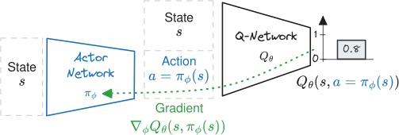
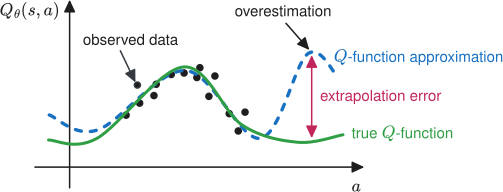
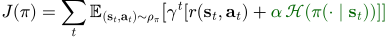
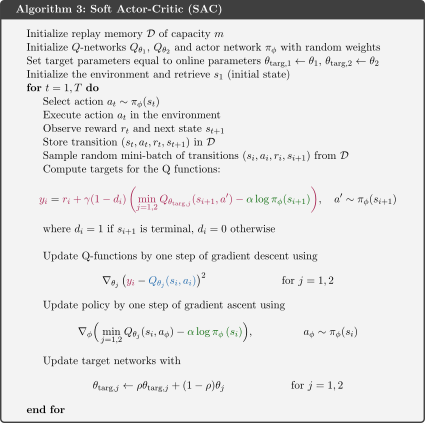
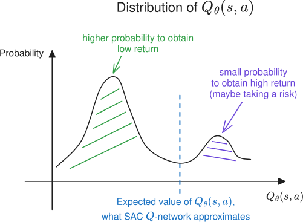

RL103: From Deep Q-Learning (DQN) to Soft Actor-Critic (SAC) and Beyond

This second blog post continues my practical introduction to (deep) reinforcement learning, presenting the main concepts and providing intuitions to understand the more recent Deep RL algorithms.
In a first post (RL102), I started from tabular Q-learning and worked my way up to Deep Q-learning (DQN). In this second post, I continue on to the Soft Actor-Critic (SAC) algorithm and its extensions.
Note: this post is part of my PhD Thesis and you can watch part of this blog on YouTube (presented at a ML workshop in CERN).
FQI and DQN Limitations
While FQI and DQN algorithms can handle continuous state spaces, they are still limited to discrete action spaces. Indeed, all possible actions ($\color{#5F3DC4}{a \in \mathcal{A}}$) must be enumerated to compute $\max_{a’ \in \mathcal{A}}Q^{n-1}_\theta(\ldots)$ (see part I). This $\max$ operation is used to update the $Q$-value estimate and select the action according to the greedy policy1.
One solution to enable $Q$-learning in continuous action space is to parametrize the $Q$-function so that its maximum can be easily and analytically determined. This is what the Normalized Advantage Function (NAF) does by restricting the $Q$-function to a function quadratic in $a$.
Extending DQN to Continuous Actions: Deep Deterministic Policy Gradient (DDPG)
Another possibility is to train a second network $\pi_{\phi}(s)$ to maximize the learned $Q$-function2. In other words, $\pi_{\phi}$ is the actor network with parameters $\phi$ and outputs the action that leads to the highest return according to the $Q$-function:
\begin{align} \max_{a \in A} Q_\theta(s, a) \approx Q_\theta(s, \pi_{\phi}(s)). \end{align}
This idea, developed by the Deep Deterministic Policy Gradient (DDPG) algorithm, provides an explicit deterministic policy $\pi_{\phi}$ for continuous actions. Since $Q_\theta$ and $\pi_{\phi}$ are both differentiable, the actor network $\pi_{\phi}$ is directly trained to maximize $Q_\theta(s, \pi_{\phi}(s))$ using samples from the replay buffer $\mathcal{D}$ (as illustrated in the figure below). The DDPG actor’s loss is therefore:
An animation of the DDPG update of the actor network.
DDPG update of the actor network. The gradient computed using the DDPG loss is backpropagated through the $Q$-network to update the actor network so that it maximizes the $Q$-function.
For the update of the $Q$-function $Q_\theta$, DDPG uses the same regression target as DQN.
DDPG extends DQN to continuous actions but has some practical limitations. $\pi_{\phi}$ tends to exploit regions of the state space where the $Q$-function overestimates the $Q$-value, as shown below.
Illustration of the overestimation and extrapolation error when approximating the $Q$-function. In regions where there is training data (black dots), the approximation matches the true $Q$-function. However, outside the training data support, there may be extrapolation error (in red) and overestimation that the actor network can exploit.
These regions are usually those that are not well covered by samples from the buffer $\mathcal{D}$. Because of this interaction between the actor and critic networks, DDPG is also often unstable in practice (divergent behavior).
Twin Delayed DDPG (TD3) and Soft Actor-Critic (SAC)
To overcome the limitations of DDPG, Twin Delayed DDPG (TD3) employs three key techniques:
- Twin $Q$-networks: TD3 uses two separate $Q$-networks and selects the minimum $Q$-value estimate from the two networks. This helps to reduce overestimation bias in the $Q$-value estimates.
- Delayed policy updates: TD3 updates the policy network less frequently than the $Q$-networks, allowing the policy network to converge before being updated.
- Target action noise: TD3 adds noise to the target action during the $Q$-network update step. This makes it harder for the actor to exploit the learned $Q$-function.
An animation of the overestimation and extrapolation error and how TD3 tries to reduce it.
Since TD3 learns a deterministic actor network $\pi_{\phi}$, it relies on external noise during the exploration phase. A common approach is to use a step-based Gaussian noise:
While the standard deviation $\sigma$ is usually kept constant, it is a critical hyperparameter that gives a compromise between exploration and exploitation.
To better balance exploration and exploitation, Soft Actor-Critic (SAC), successor of Soft Q-Learning (SQL), optimizes the maximum-entropy objective, which is slightly different from the classical RL objective:
where $\mathcal{H}$ is the policy entropy and $\alpha$ is the entropy temperature, allowing a trade-off between the two objectives. This objective encourages exploration by maximizing the entropy of the policy while still solving the task by maximizing the expected return (classic RL objective).
SAC learns a stochastic policy using a squashed Gaussian distribution, and incorporates the clipped double $Q$-learning trick from TD3. In its latest iteration, SAC automatically adjusts the entropy coefficient $\alpha$, eliminating the need to tune this crucial hyperparameter.
In summary, as shown in the algorithm block above, SAC combines several key elements from the algorithms presented in this blog post series. It uses the update rule from FQI and adopts the Q-network, target network and replay buffer from DQN to learn the $Q$-function.
SAC also incorporates techniques from DDPG to handle continuous actions, uses the clipped double $Q$-learning trick from TD3 to reduce overestimation bias, and optimizes the maximum entropy objective with a stochastic policy to balance exploration and exploitation.
SAC and its variants are the algorithms I used during my PhD to train RL agents directly on real robots.
Beyond SAC: TQC, REDQ, DroQ, …
Several extensions of SAC3 have been proposed, in particular to improve the sample efficiency. One notable example is Truncated Quantile Critics (TQC) which builds upon SAC by incorporating distributional RL.
In distributional RL, the $Q$-function estimates the distribution of returns instead of just the expected return. The figure below illustrates the benefits of learning the distribution of returns rather than only the expected value in an example.
An example where learning the distribution of returns (distributional RL) instead of the expected value (classic RL) can be useful. We plot the distribution of returns for a given state-action pair $(s, a)$. In this case, there is a bimodal distribution. Learning the expected value of it instead of the distribution itself is harder and does not allow to measure the risk of taking a particular action.
A key idea to improve sample efficiency is to perform multiple gradient updates for each data collection step. However, simply increasing the update-to-data (UTD) ratio may not lead to better performance due to the overestimation bias.
To address this issue, the algorithms REDQ and DroQ rely on ensembling techniques (explicit for REDQ, implicit for DroQ with dropout). Finally, a new algorithm, CrossQ, takes a different approach by removing the target network and using batch normalization to stabilize learning4.
Citation
@article{raffin2025rl103,
title = "RL103: From Deep Q-Learning (DQN) to Soft Actor-Critic (SAC) and Beyond",
author = "Raffin, Antonin",
journal = "araffin.github.io",
year = "2025",
month = "Dec",
url = "https://araffin.github.io/post/rl103/"
}
Acknowledgement
I would like to thank Anssi and Alison for their feedback =).
All the graphics were made using excalidraw and latex-to-svg.
Did you find this post helpful? Consider sharing it 🙌
Footnotes
-
Selecting the best action with $\arg\max_{\color{#5F3DC4}{a \in \mathcal{A}}} Q(s, a)$ ↩︎
-
A third option is to sample the $Q$-value, as explored by QT-Opt ↩︎
-
Several SAC extensions are available in SB3 Contrib and SBX (SB3 + Jax) ↩︎
-
To be continued… ↩︎
Antonin Raffin
Research Engineer in Robotics and Machine Learning
Robots. Machine Learning. Blues Dance.